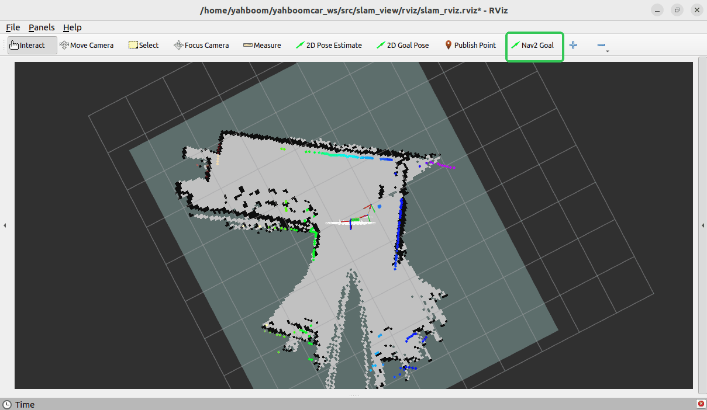
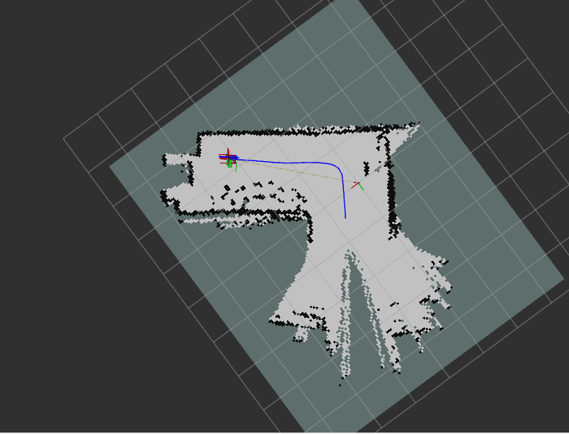

Построение карты RTAB-Map
1. Содержание
В этом разделе объясняется, как объединить шасси робота, лидар и камеру глубины для реализации построения карты с помощью RTAB-Map.
1.1 Введение в RTAB-Map
RTAB-MAP (Real-Time Appearance-Based Mapping) — это алгоритм визуального SLAM (одновременная локализация и построение карты) на основе распознавания внешнего вида (appearance-based) в реальном времени, применяемый преимущественно для задач построения карты и навигации в робототехнике, дополненной реальности и других областях. RTAB-Map обладает следующими особенностями:
- Обнаружение замыкания петли на основе внешнего вида: преимущественно использует визуальные признаки для распознавания локации.
- Работа в реальном времени: обеспечивается за счёт механизма управления памятью.
- Поддержка нескольких типов датчиков: поддерживает RGB-D-камеры, стереокамеры и монокулярные камеры.
- Построение 3D-карты: создаёт плотные 3D-облака точек карты.
1.2. Принцип работы RTAB-Map
Обработка на переднем плане (front-end)
- Получение данных изображения от датчиков.
- Извлечение визуальных признаков (например, SIFT, SURF, ORB и т.д.).
- Вычисление преобразования положения между текущим и предыдущим кадром.
Оптимизация на backend
- Оптимизация графа положений с помощью методов оптимизации графа (например, g2o).
- Обнаружение замыкания петли (когда робот возвращается в ранее посещённое место).
Управление памятью
- Использует механизм рабочей памяти (Working Memory, WM) и долговременной памяти (Long-Term Memory, LTM).
- Недавние данные хранятся в WM, а более старые переносятся в LTM.
- При обнаружении замыкания петли соответствующие данные переносятся из LTM обратно в WM.
В этом разделе команды вводятся в терминале. Какой терминал открывать, зависит от типа используемой материнской платы. В этом уроке в качестве примера используется Raspberry Pi 5. Для плат Raspberry Pi и Jetson-Nano необходимо открыть терминал на хост-компьютере и ввести команду для входа в Docker-контейнер. После входа в контейнер вводите команды этого раздела уже внутри него. Инструкции по входу в Docker-контейнер с хост-компьютера см. в руководстве к изделию [Configuration and Operation Guide] — [Entering the Docker] (для пользователей Jetson Nano и Raspberry Pi 5, см. соответствующий раздел).
Для плат Orin достаточно просто открыть терминал и ввести команды этого урока.
2. Подготовка
Из-за ограниченной производительности Raspberry Pi 5 и Jetson Nano не могут стабильно выполнять алгоритм RTAB-Map в Docker на материнской плате. Поэтому для этого требуется виртуальная машина. Для организации распределённого взаимодействия между роботом и виртуальной машиной необходимо выполнить два условия:
- Обе системы должны находиться в одной локальной сети. Наиболее простой способ — подключить их к одной и той же сети Wi-Fi.
- Обе системы должны иметь одинаковый
ROS_DOMAIN_ID. ЗначениеROS_DOMAIN_IDпо умолчанию для робота — 30, и для виртуальной машины по умолчанию также 30. Если значения различаются, необходимо изменитьROS_DOMAIN_IDна виртуальной машине. Для этого измените файл~/.bashrc, задав значениеROS_DOMAIN_ID, совпадающее со значением на роботе. Сохраните и закройте файл, затем введите командуsource ~/.bashrc, чтобы обновить переменные окружения. - Чтобы проверить распределённое взаимодействие между двумя системами, введите на виртуальной машине команду
ros2 node list. Если вы видите/YB_Node, соединение установлено.
На материнской плате Orin программу можно запускать непосредственно на самой плате.
3. Запуск программы
Сначала введите в терминале робота следующую команду, чтобы запустить шасси, лидар и камеру.
ros2 launch M3Pro_navigation rtab_bringup.launch.py
Затем откройте терминал на виртуальной машине и введите следующую команду, чтобы перевести манипулятор в положение для построения карты.
ros2 topic pub /arm6_joints arm_msgs/msg/ArmJoints {"joint1: 90,joint2: 180,joint3: 5,joint4: 0,joint5: 90,joint6: 0,time: 1500"} --once
Откройте терминал на виртуальной машине и введите следующую команду, чтобы запустить построение карты RTAB-Map.
ros2 launch rtabmap_launch rtabmap.launch.py rgb_topic:=/camera/color/image_raw depth_topic:=/camera/depth/image_raw camera_info_topic:=/camera/color/camera_info odom_topic:=/odom frame_id:=base_link use_sim_time:=false rviz:=true rtabmap_viz:=false approx_sync:=true approx_sync_max_interval:=0.01 qos:=2 visual_odometry:=false icp_odometry:=false subscribe_scan:=true sync_queue_size:=50 topic_queue_size:=50 rtabmap_args:="--delete_db_on_start"
После успешного запуска появится изображение, показанное ниже.
Измените настройки в rviz, чтобы переключить отображение облака точек на RGB, как показано ниже.


Наконец, откройте терминал на виртуальной машине и введите следующую команду, чтобы включить управление движением робота с клавиатуры для построения карты.
ros2 run yahboomcar_ctrl yahboom_keyboard
Здесь двигайте робота как можно медленнее. Нажмите клавишу [z], чтобы снизить линейную скорость и замедление. Затем нажимайте клавишу [i] для движения робота вперёд, [,] — назад, [j] — для поворота влево и [l] — для поворота вправо.
Как показано ниже, карта построена.

После завершения построения карты нажмите Ctrl+C в терминале, где был запущен rtabmap.launch.py, чтобы закрыть программу. Карта будет сохранена в /home/yahboom/.ros/rtabmap.db.
4. Разбор команды
Команда построения карты RTAB-Map выглядит следующим образом:
ros2 launch rtabmap_launch rtabmap.launch.py rgb_topic:=/camera/color/image_raw depth_topic:=/camera/depth/image_raw camera_info_topic:=/camera/color/camera_info odom_topic:=/odom frame_id:=base_link use_sim_time:=false rviz:=true rtabmap_viz:=false approx_sync:=true approx_sync_max_interval:=0.01 qos:=2 visual_odometry:=false icp_odometry:=false subscribe_scan:=true sync_queue_size:=50 topic_queue_size:=50 rtabmap_args:="--delete_db_on_start"
rgb_topic: топик цветного изображения.depth_topic: топик изображения глубины.camera_info_topic: топик внутренних параметров цветной камеры.odom_topic: топик одометрии.frame_id: имя базовой системы координат робота.use_sim_time: использовать ли время симуляции.rviz: включить ли отображение в rviz.rtabmap_viz: включить ли отображение плагина rtabmap.approx_sync: включить ли приблизительную синхронизацию по времени.approx_sync_max_interval: максимально допустимая разница времени синхронизации.visual_odometry: включить ли визуальную одометрию.icp_odometry: включить ли одометрию на основе сопоставления облаков точек методом ICP.subscribe_scan: подписываться ли на данные лидара.sync_queue_size: размер очереди синхронизации по времени.topic_queue_size: размер очереди подписки для отдельного топика.rtabmap_args: параметры, передаваемые напрямую в ядро RTAB-MAP. Возможные параметры включают следующие:--delete_db_on_start: очищает предыдущую базу данных карты при запуске.--Mem/IncrementalMemory false: отключает режим инкрементальной памяти (для режима только локализации).--Rtabmap/DetectionRate 2: задаёт частоту обнаружения замыкания петли (Гц).qos: политика качества обслуживания (Quality of Service, QoS). Возможные значения:0:SYSTEM_DEFAULT1:RELIABLE(гарантированная доставка)2:BEST_EFFORT(возможна потеря).